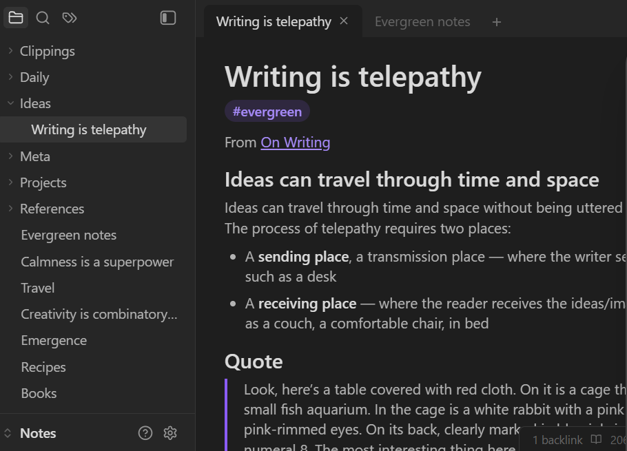

Obsidianは無料で利用できるノート管理ソフトです。 メモやアイデアを保存するだけでなく、ノート同士をリンクでつなげることで知識を整理できます。 学習ノートや読書メモ、仕事の情報整理など幅広い用途に活用できる人気アプリです。

公式サイトからダウンロードできます。
★★★★★
単なるメモ帳ではなく、知識を整理・蓄積したい人におすすめのソフトです。 学習や読書、仕事で得た情報を長期的に管理したい場合に特に役立ちます。 慣れるまで少し時間はかかりますが、使いこなせると非常に強力なツールです。
更新日：2026-06-25